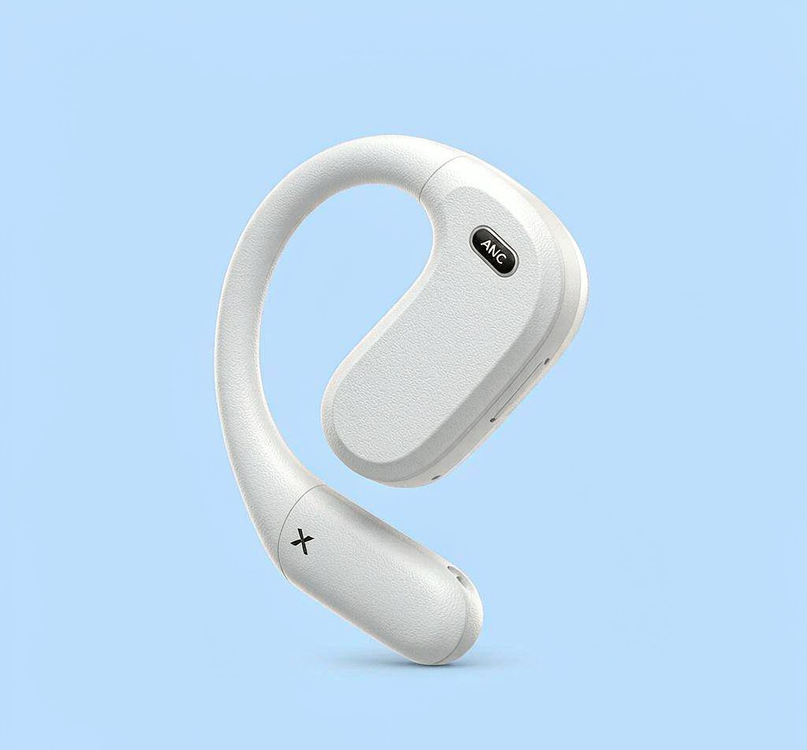
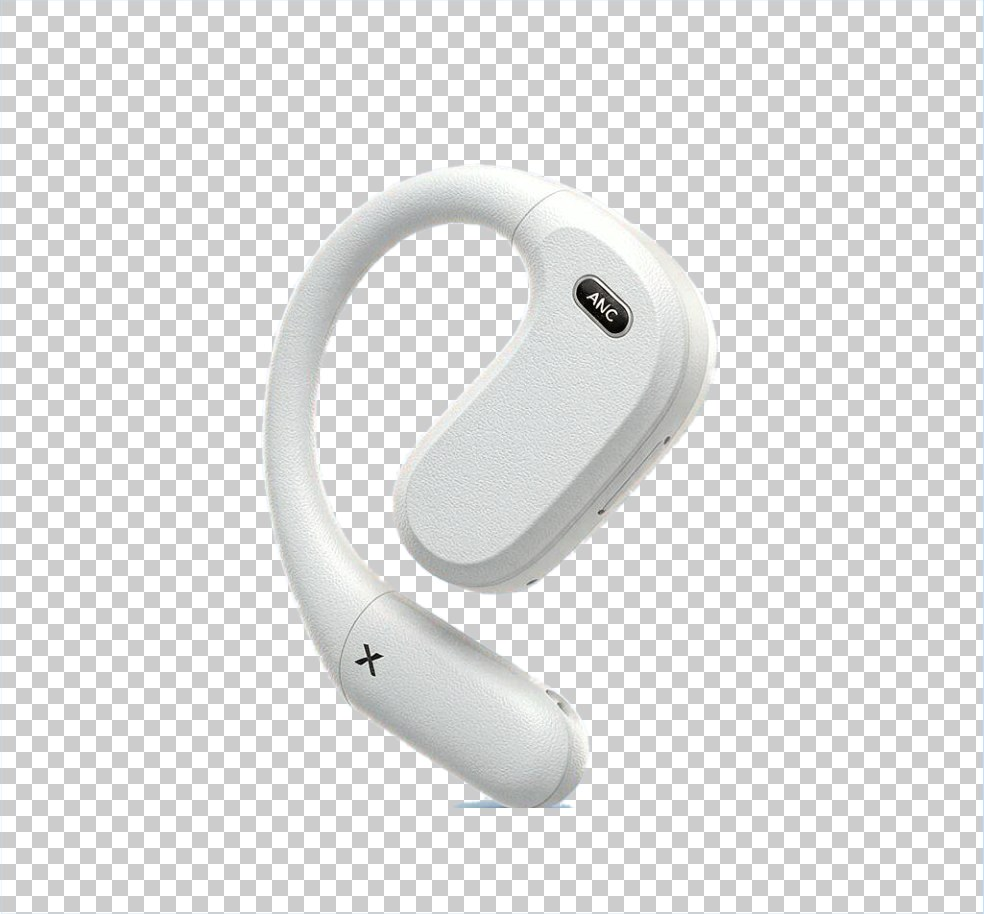
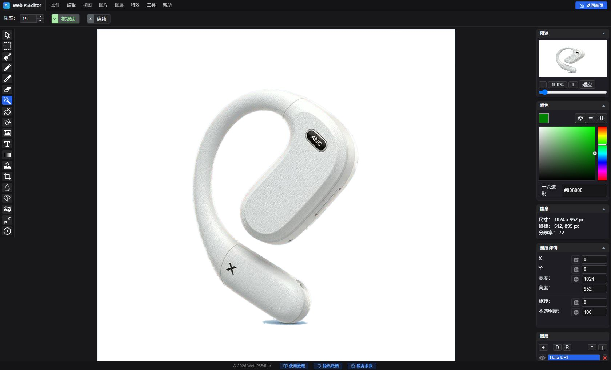

实战教程：3步轻松在线抠图并导出透明底PNG
随时随地，纯浏览器极速抠图
打开 Web PSEditor 开始抠图 →
零依赖，零插件，打开即用。
制作电商商品图、PPT 配图或专属表情包时，提取纯净透明的主体是最高频的需求。传统的 JPG 格式不支持透明度，必须将背景彻底剥离并保存为 PNG 格式。下面教你用 Web PSEditor 快速抠图的实用工作流，全程本地运算，图片绝不上传。


第一步：导入并解锁基础图层
打开 Web PSEditor，将图片拖入画板。右侧图层面板（Layers）会默认生成一个基础图层。确保右侧图层处于选中状态（点击图层高亮）。
第二步：魔术橡皮一键去背景
点击左侧工具栏的 魔术橡皮擦工具（魔棒图标），在纯色背景上点一下——同色系像素瞬间全部消失。如果背景有渐变或柔和阴影，把顶部的 功率（Power） 调高到 20 ~ 60，再对边角残留处补点几下即可清理干净。遇到复杂边缘，改用 套索 / 多边形选区 手动圈出主体后按 Delete 删除。

第三步：务必选 PNG 格式导出
点击 【文件】 -> 【另存为】，格式选择 PNG（或 WebP）。JPG 不支持透明通道，存成 JPG 背景会自动变白。
选区工具怎么选？一张表看懂
| 工具 | 适用场景 | 操作方式 |
|---|---|---|
| 魔术橡皮擦 | 纯色或渐变均匀背景（电商商品图、人像照） | 单击即删同色像素，功率 控制容差大小 |
| 套索工具 | 轮廓不规则的自由形状主体 | 手动沿边缘圈画，再删除选区内容 |
| 多边形选区 | 方正经硬的商品、建筑、几何 Logo | 逐点连线，精准贴合直线边缘 |
⚠️ 这些坑别踩：常见错误清单
- 导出成了 JPG —— Alpha 透明通道被丢弃，背景直接变白。导出时务必选 PNG 或 WebP。
- 渐变背景功率给太低 —— 边角会留下淡淡的残影。把功率提到 30~60，对残留处补点几下。
- 不检查边缘就交付 —— 放大到 200% 检查发丝、玻璃等半透明边缘，发现白边/色晕就降功率再擦一遍。
常见问题 FAQ
为什么导出后背景还是白色的？
大概率是保存成了 JPG。JPG 不支持透明度——重新导出并把格式选为 PNG（或 WebP）即可。
背景有轻微渐变，一下没点干净怎么办？
把顶部属性栏的 功率（容差） 调到 30~60 左右，再对残留区域补点。重复点击是安全的，随时可以 Ctrl + Z 撤销。
能保留商品底部的自然投影吗？
可以。把功率调低，让工具只去除平坦的纯背景色；或者用套索工具圈选背景时绕开投影区域。
我的图片会被上传到服务器吗？
不会。Web PSEditor 是 100% 纯客户端应用，图片只在你浏览器内存中处理，全程不离开你的设备。
哪些图片格式支持透明背景？
PNG 和 WebP 都支持完整 Alpha 透明通道；GIF 只支持 1 位透明（边缘会有锯齿）；JPG 完全不支持。
相关教程推荐
💡 为什么我的背景存下来还是白色？
请务必检查导出时的格式设置。JPG 图片协议本身没有 Alpha 透明通道，只有 **PNG** 或 **WebP** 才能完美保留抠出来的透明图层！
请务必检查导出时的格式设置。JPG 图片协议本身没有 Alpha 透明通道，只有 **PNG** 或 **WebP** 才能完美保留抠出来的透明图层！
🎯
动手实操练习
纯本地运算
无需安装软件，立即在浏览器中应用本篇所学技巧，纯本地处理无隐私泄露风险。